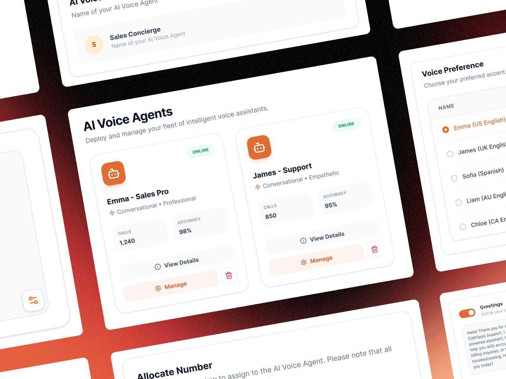
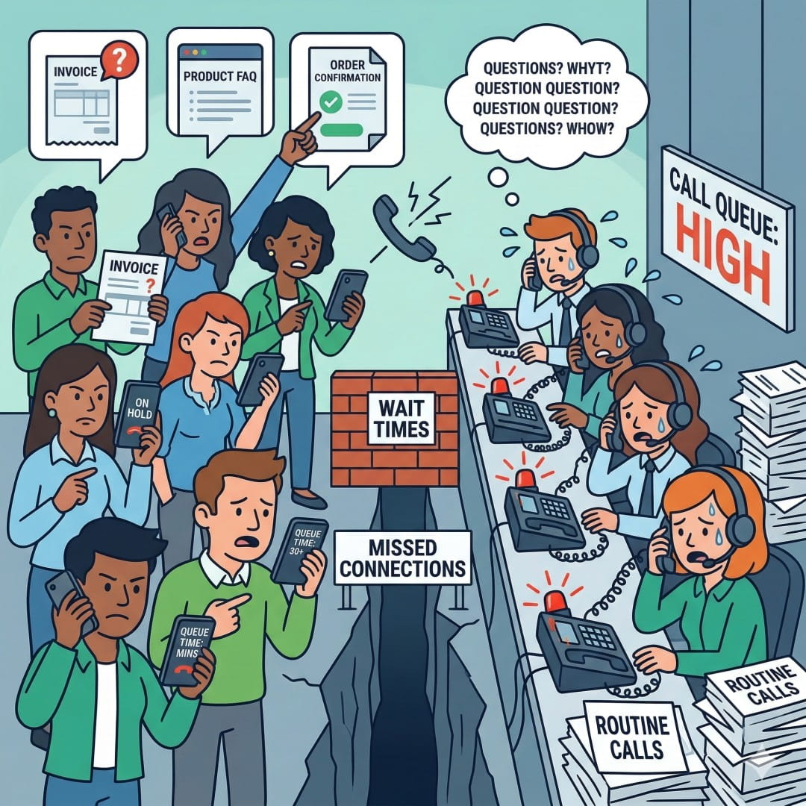
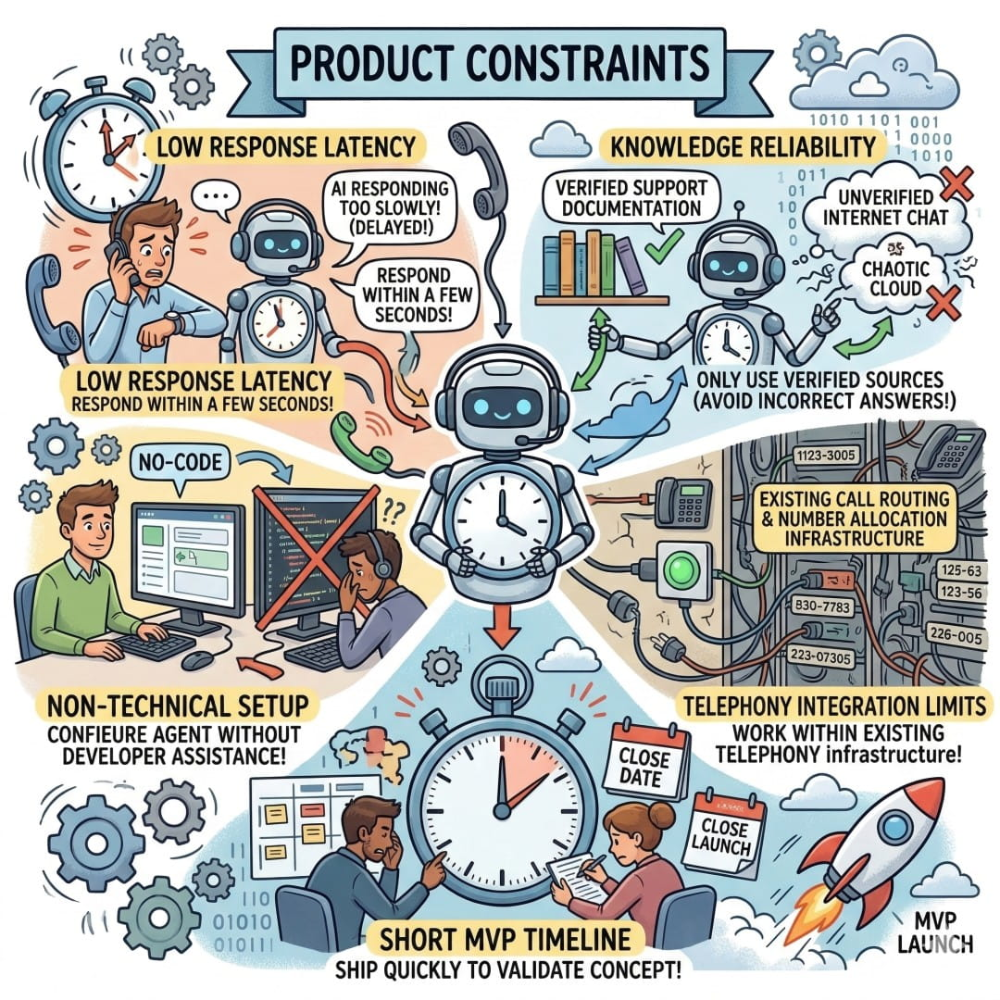
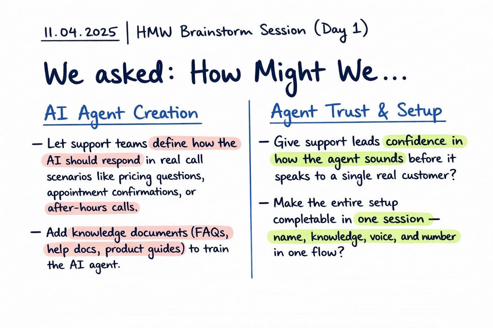
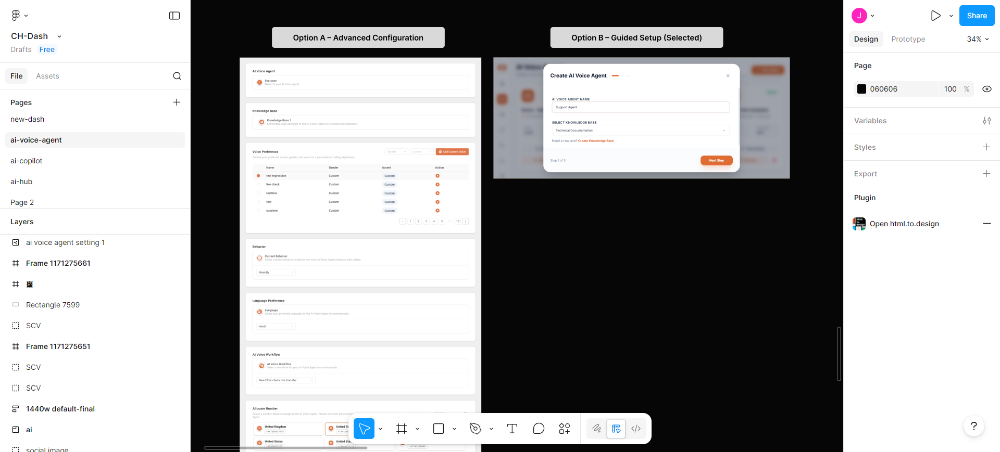
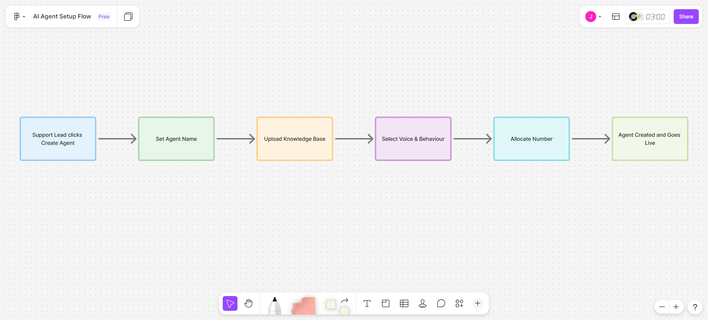

Designed an AI voice agent that automates 54% of inbound support calls
Overview & Context
CallHippo’s customers rely on inbound calls for billing questions, product FAQs, appointments, and order status — but every call required a human, leading to missed after-hours calls and long wait times during peak hours.
Partnering with the PM, I designed CallHippo’s first AI Voice Agent from scratch: a 24/7 inbound system that answers routine questions and routes calls automatically. The goal was to design a simple, user-friendly 3-step setup so any support team could quickly create and launch an AI agent without complexity.
Role
Product Designer / UX Lead
Responsibilities
Research, Product Strategy, Interaction Design, UI Design, Developer Collaboration
Duration
3 Weeks
Impact
AI handled ~54% of routine inbound calls

Problem

Context
CallHippo customers handle thousands of inbound support calls every day, many of which are repetitive questions with predictable answers.
Problem
Despite having the information available, every call still required a human agent. During peak hours or after business hours, callers often ended up in queues or voicemail.
Impact
Support teams were losing customers in the moments between a call arriving and an agent becoming available.
Design Goals
The goal was to help support teams handle routine inbound calls without requiring a human agent for every request. The design focused on enabling automated responses for predictable call types while ensuring agents could spend their time on more complex conversations.
Goal
AI handles predictable call types so a human agent does not need to pick up.
Baseline
0% containment. Every call required a human agent to answer.
Outcome
0% → ~54% containment
Routine calls are now handled by AI. Human agents focus on complex cases.
Product Constraints

⚡ Response latency
AI replies must remain under a few seconds during calls.
👩💼 Non-technical setup
Support teams must deploy the agent without engineering help.
📚 Knowledge reliability
Responses must be grounded in verified documentation.
⏱ MVP timeline
The first version needed to ship quickly for validation.
User Research
Before moving to solutions, I spent 3 days understanding how support teams were currently managing inbound call volume. I interviewed 6 people — support managers, team leads, and SMB owners running their own customer service operations.
Two distinct roles — each with a different relationship to inbound call management
Support Team Lead
"We miss a huge chunk of calls after 6pm. Those customers don't call back. They just leave. I know an AI could handle most of those questions — I just don't know how to set it up."
SMB Owner
"I'm the only support person. When I'm on a call, the next customer gets nothing. I need something that can at least answer and hold them until I'm free."
Research Insights
I ran remote interviews and walkthroughs where support leads described their current call management workflows while thinking aloud. The same patterns surfaced consistently across team sizes and industries.
Insight 01
Brand trust mattered more than perfect AI answers
Support leads were less concerned about occasional incorrect responses. Their biggest concern was how the AI sounded to customers. An unnatural or robotic voice would reflect poorly on their brand.
Insight 02
Users think in call scenarios, not configuration settings
When users described what they wanted the AI to handle, they talked about situations — pricing questions, appointment confirmations, or calls after business hours. They did not think in terms of system configuration or rules. The setup experience needed to match this mental model.
Insight 03
Missed after-hours calls were the biggest operational gap
Most teams mentioned the same problem. Customers calling outside business hours often received no response. This made round-the-clock call coverage the most important use case for the AI agent.
Key User Needs
Support Team Lead
Pain: Missed inbound calls when agents were busy or after business hours.
Consequence: Customers often left without getting help, leading to unresolved issues and lower satisfaction.
Need: A system that can automatically handle routine customer calls so agents can focus on complex support cases.
SMB Owner
Pain: Solo operators couldn't answer every call while already helping another customer.
Consequence: Incoming callers received no response, creating missed opportunities and frustrated customers.
Need: An AI agent that can answer common questions and hold conversations until the owner becomes available.
Brainstorming Scoping
After synthesizing research, I ran a prioritization session with the PM and engineering lead. We mapped potential features against support team needs and build complexity.

Image: Early ideation session using the "How Might We" framework to identify opportunities for simplifying AI agent creation and building trust in automated call handling.
Design Tradeoff
Early exploration considered a more configurable setup with multiple advanced settings for voice behavior, routing, and knowledge mapping. While this approach provided flexibility, it introduced complexity for support leads and SMB owners who were not technical users.
Simplicity vs Flexibility
I prioritized a guided setup flow instead, focusing on the essential steps required to deploy an AI agent quickly. This reduced configuration flexibility but significantly improved usability and reduced the time required to create an agent.

User Flow
Before designing the interface, I mapped the full setup journey from a support lead clicking Create Agent to the agent going live. The goal was to understand what decisions users needed to make during setup and how to keep the process simple for non-technical teams.
Setup flow

Key Design Decision
This exercise revealed an important constraint. Every setup decision had to live inside a single guided popup so users would not need to navigate across multiple pages.
The sequence was intentional. The agent first needs a knowledge base before defining how it should speak. Once the knowledge is defined, the user can configure the voice and behaviour.
Keeping everything in one structured flow made the setup faster and easier for support teams.
Design
AI Voice Agent Setup Experience
This video shows the final setup flow where support teams can create and deploy an AI agent in a single guided popup. The process includes naming the agent, connecting a knowledge base, configuring voice behaviour, and allocating a phone number.
Setup Experience
Support teams needed a simple way to create and launch an AI agent without developer help. I designed a guided setup that can be completed in a single popup.
Step 1: Agent identity and knowledge — The setup starts by defining the agent's name and connecting the knowledge base. This ensures the agent knows what information it can use before any other configuration.
Step 2: Voice and behaviour — Next, users choose the agent's voice and tone. A preview option lets them hear how the agent will sound before activating it.
Step 3: Number allocation — Finally, the user selects the phone number the agent will answer. Numbers are shown in a visual grid so they are easy to scan and choose.
Outcome
54% of routine inbound calls handled automatically
Billing questions, FAQs, appointment confirmations, and order status calls are now handled by the AI agent.
Support teams gained continuous call coverage
Customers receive responses even outside business hours without requiring additional staffing.
Agents focus on complex support cases
Human agents spend less time answering repetitive questions and more time resolving customer issues.
What I Learned
Setup sequence affects user confidence
The order of the setup flow mattered more than expected. Starting with knowledge, then voice, and finally number allocation helped users understand the agent before activating it.
Knowledge quality directly affects AI performance
Teams with well-structured FAQs and support documentation saw much better AI responses. The design had to make connecting a knowledge base simple and visible.
Trust is critical when introducing AI features
Users wanted reassurance before launching the agent. Voice previews and a guided setup helped them feel confident before activating the system.